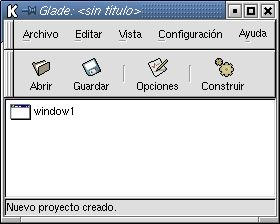
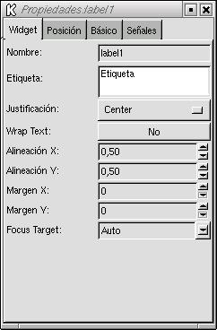
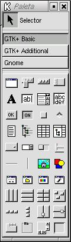
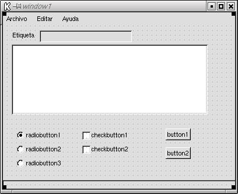

Realmente conociendo el conjunto de widgets de GTK y los métodos
asociados a cada uno, se pueden hacer interfaces muy amigables y todo lo
complicadas que se quiera. Sin embargo, esto requiere bastante tiempo y
esfuerzo.
Afortunadamente, hoy disponemos de herramientas que permiten diseñar las interfaces de forma también visual. Algunas de estas herramientas para otras plataformas son muy conocidas.
En Linux existen también este tipo de herramientas. Para aquellos que programen en C o C++, hay unas cuantas que permiten el desarrollo de aplicaciones con las librerías gráficas QT y GTK
En concreto la que se suele usar para el desarrollo de aplicaciones GTK es la herramienta llamada Glade, que se suele incluir en la mayoria de las distribuciones Linux. Pues bien, Glade permite exportar los proyectos no solo a C o C++ sino también a otros lenguajes de programación entre los que está por supuesto Perl
Una sesión con Glade tiene un aspecto como el siguiente:
|  |  | |
|  |  |
 |
|
| Anterior | Home |